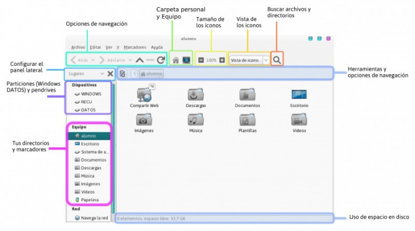

Archivos y Carpetas
De Huayra
En esta sección vas a poder encontrar todo lo que necesitás saber para trabajar con tus archivos y directorios en Huayra (crearlos, eliminarlos, copiarlos, renombrarlos, compartirlos, etc.). Así se ve el visor de archivos al abrir tu Carpeta personal. En la misma te mostramos las diferentes tareas y configuraciones que vas a poder hacer, que más abajo describimos en más detalle.
Para más información sobre particiones, cómo están organizadas en el disco de las netbooks y la organización de directorios en Huayra GNU/Linux hacé clic en Estructura de los directorios en GNU/Linux
  Carpeta personal
Carpeta personal
{kind=link}
- Tareas comunes con archivos y directorios
- En el cuerpo principal podés ver tus archivos sobre los que podés realizar las tareas de siempre (copiar, pegar, mover, borrar, comprimir, etc.)
- Explorar directorios con pestañas (Ctrl+T) y divisiones (F3)
- En una netbook no tenés mucho espacio, por lo tanto si abrís muchas ventanas de archivos entonces te conviene combinarlo con pestañas o dividir la pantalla, y así poder ver en una misma ventana muchos directorios.
- Configurar apariencia del Navegador de archivos
- Todo lo que hacés con la net implica trabajar con archivos y directorios, por eso tenés que poder configurar y organizar el Navegador de archivos para que te sea cómodo
- Marcadores de carpeta
- Crear marcadores te va a permitir acceso rápido a las carpetas que más uses
- Buscar archivos y directorios
- En Huayra es muy fácil buscar archivos o directorios en tu netbook
- Compartir archivos
- Con Huayra podés compartir archivos entre tus compañeros sin necesidad de Internet, solamente usando la red escolar interna.
- Hacer backup
- Es muy importante que siempre hagas backup de tus archivos. Podés configurar Huayra para que lo haga automáticamente por vos cada cierto periodo.
- Plantillas: crear documentos usados comúnmente
- Podés crear rápidamente documentos desde archivos de plantillas personalizados, para que no tengas que escribir siempre lo mismo (Por ejemplo para un trabajo práctico, una carátula con nombre, apellido, curso, tipo de letra, tamaño, etc).